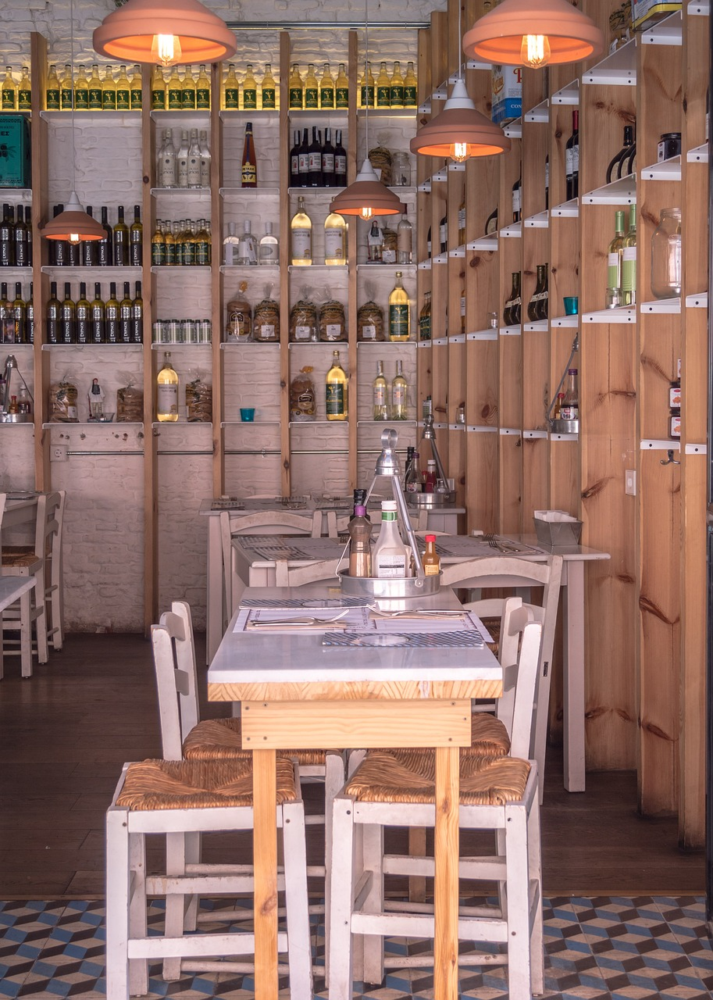

Om oss
FIKA & Wine slog upp dörrarna sommaren 2019 I våra gemytliga lokaler - bara ett stenkast från det kungliga slottet - följer en lång tradition av matservering. Redan 1788 huserade ett ”fruntimmer” samma lokaler som alla dagar i veckan sålde korn- och risgrynskorv för avhämtning.
Vårat nutida koncept utvecklas ständigt där vi fokuserar på bra kvalitet på allt vi serverar och service utöver det vanliga. Vi serverar lunch, middag, fika och såklart - vin! Dessutom har vi en mysfaktor på hög nivå! Hos oss känns det lite som att sitta hemma hos en vän.
Vi ser fram emot att träffa dig.
Varmt välkomna!
